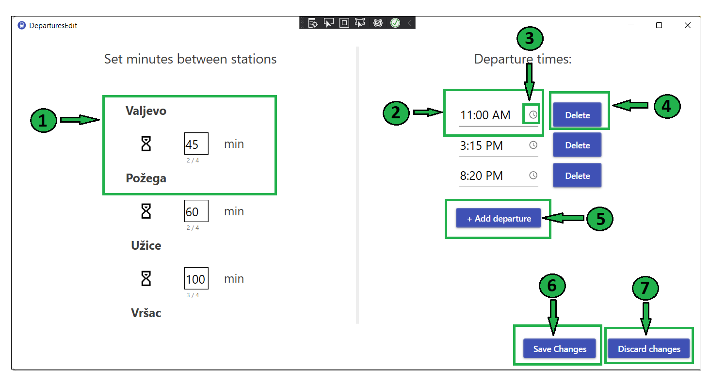
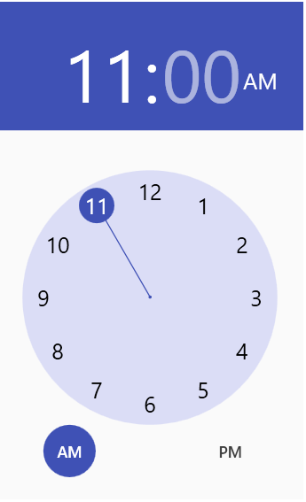

On this page you can see how you can change departures for selected line.
Here on the picture, you can see that time distance between stations "Valjevo" and "Požega" is set to 45 min. Similary, there is time in minutes between each two adjacent stations. If you want to edit that time, you can simply enter another value in box.
On the other side of the page, you can see all departure times for selected line. If you want to change departure time, you can enter another value in selected field.
You also can change departure time on easier way by clicking the small watch icon, where you can select wanted time, just as on the picture: 
If you want to delete certain departure, you can do it by clicking Delete button that is placed next to departure time
If you want to add new departure, click on the button +Add departure and select new departure time
If you want to save entered changes, you can do it simply by clicking Save Changes button. After that, you will receive the message about operation's success.
Otherwise, if you want to discard entered changes, you can do it by clicking Discard changes button. After that, you will receive the message about operation's success.